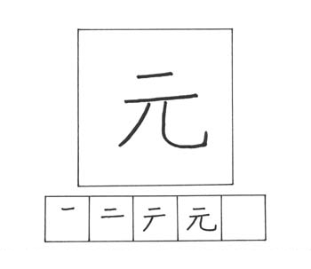
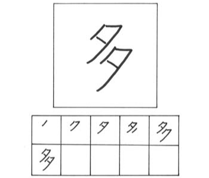
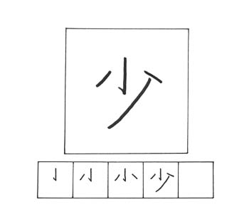

MOTO / もと
goresan : 4
arti : asal-usul
kunyomi : moto
onyomi : gen, gan
kotoba :
元気 genki / sehat
火の元 hinomoto /
asal api
三次元 sanjigen /
tiga dimensi
元日 ganjitsu /
hari di tahun baru

KI / き
goresan : 6
arti : mood
kunyomi : -
onyomi : ki
kotoba :
空気 kuuki / udara
天気 tenki / cuaca
電気 denki / listrik
気分 kibun / mood

OO-I / おおーい
goresan : 6
arti : banyak
kunyomi : oo-i
onyomi : ta
kotoba :
多い ooi / banyak
多分 tabun / mungkin
多数 tasuu / jumlah banyak
多量 taryou / jumlah besar

SUKO-SHI / すこーし
goresan : 4
arti : sedikit
kunyomi : suko-shi, suku-nai
onyomi : shou
kotoba :
少女 shoujo / gadis
少年 shounen / remaja
少し sukoshi / dikit (agak)
少ない sukunai /sedikit